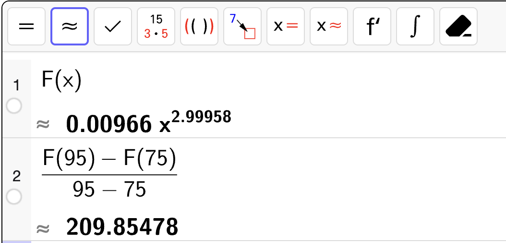
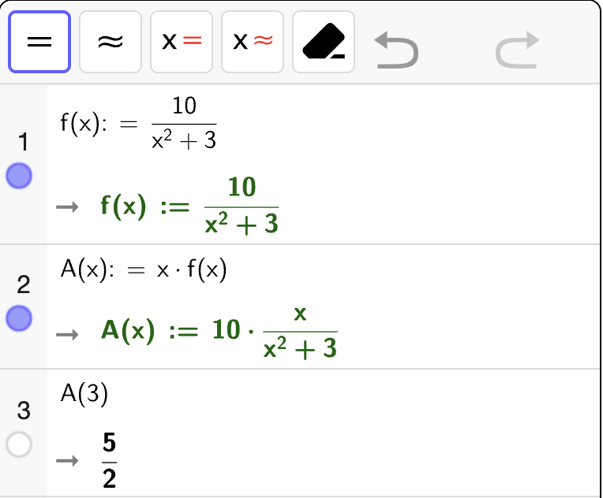
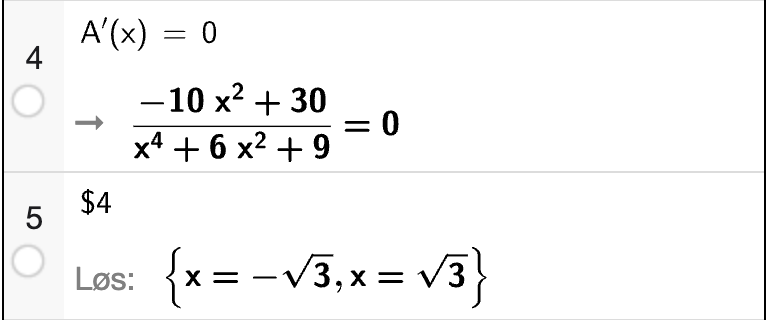

Eksamen høst 2025#
Del 1 – Uten hjelpemidler#
Oppgave 1 (2 poeng)#
Løs ulikheten
Vi starter med å bestemme nullpunktene til \(f(x) = x^2 + 4x - 5\). Vi bruker \(abc\)-formelen:
Dette gir oss to nullpunkter:
Det betyr at vi kan skrive om uttrykket til nullpunktsform slik at ulikheten blir
Grafen til uttrykket vil være konveks  siden den ledende koeffisienten er positiv. Da må grafen ligge under \(x\)-aksen mellom nullpunktene som betyr at løsningen på ulikheten er
siden den ledende koeffisienten er positiv. Da må grafen ligge under \(x\)-aksen mellom nullpunktene som betyr at løsningen på ulikheten er
Oppgave 2 (3 poeng)#
Bestem nullpunktene til funksjonen \(f\) gitt ved
De mulige heltallige nullpunktene til \(f\) vil være \(x\)-verdier som kan dele konstantleddet \(12\). De betyr at mulige nullpunkter er
Vi tester ut verdiene systematisk til vi treffer et nullpunkt. Vi bruker et Horner-skjema:
Vi ser at vi får \(0\) i rest som betyr at \(x = 1\) er et nullpunkt. Fra Horner-skjemaet kan vi også lese av resultatet av polynomdivisjonen \(f(x) : (x - 1)\) som er:
For å bestemme de resterene nullpunktene, må vi løse likningen
Vi bruker \(abc\)-formelen:
Dette gir oss to nullpunkter:
Altså er nullpunktene til funksjonen \(f\):
Oppgave 3 (4 poeng)#
En rasjonal funksjon \(f\) er gitt ved
- Påstand 1
Grafen til \(f\) har nøyaktig ett nullpunkt.
- Påstand 2
Grafen til \(f\) har ingen vertikale asymptoter.
- Påstand 3
Grafen til \(f\) skjærer aldri \(y\)-aksen
- Påstand 4
Grafen til \(f\) har en horisontal asymptote \(y = 2\).
- Påstand 1
Sann
- Påstand 2
Sann
- Påstand 3
Usann
- Påstand 4
Usann
- Påstand 1
Grafen til \(f\) har nøyaktig ett nullpunkt siden telleren er en lineær funksjon og denne har ett nullpunkt. Nevnerpolynomet har ingen nullpunkter så vi trenger ikke bekymre oss for at både teller og nevneren er null samtidig. Dermed er påstanden sann.
- Påstand 2
Grafen til \(f\) har ingen vertikale asymptoter siden nevnerpolynomet ikke har noen nullpunkter. Påstanden er derfor sann.
- Påstand 3
Grafen \(f\) skjærer \(y\)-aksen siden uttrykket er definert for \(x = 0\). Påstanden er derfor usann.
- Påstand 4
Nevnergraden er høyere enn tellergraden som betyr at den horisontale asymptoten må være \(y = 0\). Påstanden er derfor usann.
Oppgave 4 (2 poeng)#
For fem år siden vant Oskar i Lotto. Han satte pengene i banken og har fått \(4.5~\%\) rente per år. I dag har han \(250~000\) kroner på kontoen.
Hvilket eller hvilke av uttrykkene nedenfor kan vi bruke for å regne ut hvor mye Oskar vant i Lotto?
Uttrykk 2 og 6.
I dag er verdien \(250~000\) og den har økt med \(4.5~\%\) per år som tilsvarer en vekstfaktor på \(1.045\). Det betyr at pengene på kontoen er beskrevet av eksponentialfunksjonen
der \(a\) er startverdien (det Oskar vant i Lotto) og \(x\) er antall år pengene har stått i banken. Etter \(5\) år (som er i dag) så er \(f(5) = 250~000\). For å finne \(a\) må vi løse likningen
Dette kan også skrives om til
Altså er både uttrykk 2 og 6 riktige.
Oppgave 5 (5 poeng)#
Bruk trekanten ovenfor til å vise at \(\sin 45\degree = \dfrac{1}{\sqrt{2}}\)
Trekanten er en likesidet trekant som betyr at de to andre vinklene er \(45 \degree\). Definisjonen av sinus gir da:
Gitt en trekant \(ABC\) der \(AB = 3\sqrt{2}\), \(AC = 8\) og \(\angle A = 45\degree\).
Bestem arealet av trekanten.
Arealsetningen gir oss
Gitt en trekant \(PQR\) der \(PQ = 3\sqrt{2}\), \(PR = 8\) og \(\angle P = 140\degree\).
Hvilken av trekantene \(ABC\) og \(PQR\) har størst areal?
Husk å argumentere for svaret ditt.
Trekant ABC har størst areal.
Fra arealsetningen vil
Siden \(PQ = AB\) og \(PR = AC\), må vi bare sammenligne \(\sin \angle A\) og \(\sin \angle P\). Vi har at
Fra enhetssirkelen vet vi at \(\sin x\degree\) øker når \(x\) øker og \(x \in \langle 0, 90\rangle\). Det betyr at \(\sin 45\degree > \sin 140\degree\). Altså må arealet til trekant \(ABC\) være størst.
Oppgave 6 (3 poeng)#

Siri arbeider med femkanttall. Hun har oppdaget en sammenheng og laget programmet nedenfor.
1tall = 1
2differanse = 4
3
4while tall <= 60:
5 print(tall)
6 tall = tall + differanse
7 differanse = differanse + 3
Hvilke tall vil bli skrevet ut når programmet kjøres?
Gjør rede for sammenhengen Siri har oppdaget.
La \(F_n\) være femkanttall \(n\) (figur \(n\)). Da har vi
Sammenhengen Siri har oppdaget er at
der \(d_n\) er differansen mellom figur \(n\) og figur \(n + 1\) som tilfredsstiller
Programmet vil skrive ut \(F_n\) så lenge \(F_n \leq 60\). Vi må derfor regne ut \(F_n\) med sammenhengene ovenfor frem til vi finner at \(F_n > 60\).
Vi må vite verdien til \(d_5\). Vi har at \(d_1 = 4\). Da får vi at
Nå kan vi regne ut \(F_5\):
Videre regner vi ut \(d_6\) og \(F_6\):
\(F_7\) må nødvendigvis være større enn \(60\) siden \(d_6 = 19\). Dermed vil programmet skrive ut tallene
Del 2 – Med hjelpemidler#
Oppgave 1 (8 poeng)#

Tabellen nedenfor viser sammenhengen mellom lengde og vekt på en type fisk.
Lengde (cm) |
\(50\) |
\(70\) |
\(80\) |
\(100\) |
\(120\) |
\(130\) |
|---|---|---|---|---|---|---|
Vekt (gram) |
\(1190\) |
\(3320\) |
\(5070\) |
\(9610\) |
\(16~080\) |
\(21~590\) |
Sammenhengen kan beskrives med en modell \(F\) gitt på formen
der \(F(x)\) gram er vekten til en fisk som er \(x\) centimeter lang.
Bruk opplysningene i tabellen til å bestemme tallene \(a\) og \(b\).
Tegn grafen til \(F\).
Vi bestemmer modellen \(F(x)\) med regresjon og bruker en potensfunksjon som modell:

Altså er
Grafen til \(F\) ser da slik ut:

Her viser \(x\)-aksen lengden til fisken i cm og \(y\)-aksen viser vekten i gram.
Bestem stigningstallet til den rette linjen som går gjennom punktene \((75, F(75))\) og \((95, F(95))\).
Gi en praktisk tolkning av svaret.
Stigningstallet til den rette linja gjennom de to punktene er den gjennomsnittlige vekstfarten til \(F\) på intervallet \([75, 95]\). Vi regner ut med CAS:
{kind=link}

Altså er stigningstallet til linja ca. \(210\) gram/cm. Det betyr vekten til fisketypen i gjennomsnitt med 210 gram for hver centimeter lengden øker på intervallet \([75, 95]\) cm.
Bestem den momentane vekstfarten når \(x = 100\).
Gi en praktisk tolkning av svaret.
Den momentane vekstfarten når \(x = 100\) er \(F'(100)\). Vi regner ut med CAS:
Hvor mange prosent vil vekten til en fisk øke med dersom lengden øker med \(20~\%\) ifølge modellen?
Oppgave 2 (2 poeng)#
I dag er Abid, Therese og Harald til sammen \(68\) år. Therese er \(17\) år eldre enn Abid.
Om tre år vil Abid være dobbelt så gammel som Harald.
Hvor gamle er Abid, Therese og Harald i dag?
Vi lar \(A\) være alderen til Abid, \(T\) være alderen til Therese og \(H\) være alderen til Harald i dag.
Siden de til sammen er 68 år, har vi at
Therese er 17 år eldre enn Abid i dag som betyr at
Om tre år vil Abid være dobbelt så gammel som Harald, som vi kan beskrive med likningen
Vi løser likningssystemet med CAS:

Altså er Abid \(21\) år gammel, Harald er \(9\) år gammel og Therese er \(38\) år gammel i dag.
Oppgave 3 (5 poeng)#
Gitt figuren ovenfor.
Gjør beregninger og vis at \(AC = 3\).
La \(x = AC\). Vi bruker sinussetningen for å bestemme sidelengden med CAS:

Altså er \(AC = 3\).
Bestem arealet av firkanten \(ABCD\).
Gi svaret eksakt.
Firkanten \(ABCD\) er består av to trekanter \(\triangle ABC\) og \(\triangle ACD\).
Arealet av \(\triangle ACD\) kan vi bestemme direkte med arealsetningen:
Vi regner ut med CAS:

Altså er \(T_{\triangle ACD} = \dfrac{3\sqrt{3}}{4}\).
For å bestemme arealet av \(\triangle ABC\) bruker vi også arealsetningen. Her velger vi å ta utgangspunkt i vinkelen \(\angle BAC = 45\degree\) som vil gi
Vi kjenner ikke til \(AB\), men den kan vi bestemme ved hjelp av cosinussetningen med utgangspunkt i vinkelen \(\angle BAC\) som gir
Vi bruker CAS til å bestemme \(AB\). La \(x = AB\).

Sidelengden \(AB\) er lenger enn \(AC\), så vi må velge den største løsningen. Altså er
Så regner vi ut arealet av \(\triangle ABC\) med CAS:

Så legger vi sammen de to arealene for å få det eksakte arealet av firkanten \(ABCD\):

Dermed er det eksakte arealet av firkanten \(ABCD\) gitt ved
Oppgave 4 (3 poeng)#
Maria tegner en likesidet trekant. Hun deler trekanten i flere og flere små likesidene trekanter og fargelegger et mønster. Figurene nedenfor viser hvordan hun arbeider.
Tenk deg at Maria fortsetter å dele opp trekanten og fargelegge etter samme mønster.
Sett opp en algoritme Maria kan bruke for å finne summen av arealene av de 100 første trekantene som vil være fargelagte.
La \(T\) være arealet av hele trekanten. Den første fargelagte trekanten vil ha \(1/2\) av grunnlinja og \(1/2\) av høyden til den opprinnelige trekanten. Det betyr at arealet blir \(1/4\) av arealet til \(T\). Den neste fargelagte trekanten vil ha \(1/4\) av dette arealet igjen. La \(T_n\) være arealet av den \(n\)-te fargelagte trekanten. Da har vi at
Da kan vi lage følgende algoritme:
Sett arealet \(T\).
Sett summen av arealene til \(0\).
For \(n = 1, 2, \ldots, 100\):
Beregn \(T_{n} = \dfrac{1}{4}\cdot T_{n - 1}\).
Legg \(T_n\) til summen av arealene.
Ta utgangspunkt i algoritmen og lag et program som regner ut summen av arealene dersom arealet av den likesidete trekanten hun starter med er \(36\).
areal_sum = 0
areal = 36 # Arealet til den store trekanten
for n in range(100):
areal_sum = areal_sum + areal # summerer opp arealene
areal = 1/4 * areal # Arealet av den fargelagte trekanten
print(areal_sum)
som gir utskriften
47.99999999999999
som betyr at summen av arealene av de 100 første trekantene er ca. 48.
Oppgave 5 (4 poeng)#
Funksjonen \(f\) er gitt ved
Punktene \(A\), \(B\), \(C\) og \(D\) danner et rektangel. Punktet \(A\) ligger i origi, punktet \(B\) ligger på \(x\)-aksen, punktet \(C\) ligger på grafen til \(f\), og punktet \(D\) ligger på \(y\)-aksen. Se figuren nedenfor.
Bestem arealet av rektangelet dersom punktet \(B\) har koordinatene \((3, 0)\).
Arealet av rektangelet når \(B = (x, 0)\) vil være
Vi skal regne ut \(A(3)\) som vi gjør med CAS:
{kind=link}

Altså er arealet av rektangelet når \(B = (3, 0)\) lik \(\dfrac{5}{2}\).
Hvor på \(x\)-aksen må punktet \(B\) ligge for at arealet av rektangelet \(ABCD\) skal bli størst mulig?
Tegner vi grafen til \(A(x)\) får vi
Grafen har et toppunkt i intervallet \([1, 2]\). Vi bestemmer \(x\)-koordinaten til dette toppunkt ved å løse \(A'(x) = 0\):
{kind=link}

Altså er \(A(x)\) størst mulig dersom \(x = \sqrt{3}\). Dette er punktet på \(x\)-aksen der vi må plassere punktet \(B\) for at arealet av rektangelet skal bli størst mulig.
Oppgave 6 (3 poeng)#
En arkitekt har tegnet et snitt av en lagerhall. Lagerhallen er 20 meter høy og har form som en parabel gitt ved
På taket av lagerhallen skal det plasseres et webkamera. Webkameraet skal festet på en stang som er 3 meter lang.
Den rette linjen på figuren går gjennom punktet \((0, 23)\) og er en tangent til grafen.
Bestem likningen til tangenten.
Hvor langt fra veggen på lagerhallen kan en tyv bevege seg uten å bli fotografert av webkameraet?
Ca. 5.5 meter dersom en person er 2 meter høy.